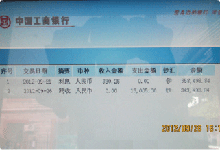
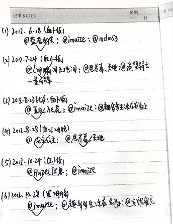

心的诉说太多，感谢的话每分每秒都在嘴里万分的感谢着。病的魔鬼想带我走，可是爱的力量包围着我，病痛的时候有你们大家鼓励着我，当我在黑暗的时候你们为我点亮了希望之灯和爱心之灯！你们不求回报，不求利益，你们只想我快点儿好起来，回到跑道上享受和大家在一起的快乐时光。谢谢你们，我不知道今后怎么报答你们每一位，我只能说我会尽量用我之后重生的郑平去爱每一位人，多做有意义的事情，希望以后也把爱传递。我想告诉大家我现在很好，就等医院的移植通知了，听说移植很痛苦，但是没关系，我会想到有大家的鼓励我一定会渡过难关的，你们说是吗？在这里我和我的家人万分的感谢大家对我的帮助，大家辛苦了，请你们原谅我不能回复大家的信息，请大家原谅！
马拉松女孩郑平的心里话
2012年11月11日
11月7日立冬，在跑友@小院槐花香 的联系下，益跑网记者专程看望了来京治疗的郑平，鼓励这位不幸却万幸的马拉松女孩用征战马拉松比赛的毅力与精神战胜疾病，并赠送一部由联想集团捐赠的新款上网手机，解决她在今后住院治疗期间与外界的联系问题。
郑平母女二人来京后，在医院附近租了一间十几平方米的平房居住。在这间简朴却不乏温馨的临时住所内，马拉松细节俯拾皆是。郑平的奖牌与参赛纪念品，以及全国各地跑友们与爱心人士们的慰问信，被母女二人珍藏摆放在室内各处。在她们看来，这些都是马拉松永不放弃精神的符号，是巨大的精神力量......
查看全部>>
在全国跑友们的关爱与帮扶下，郑平母女得以前往北京进行治疗与检查。二人在京期间，将爱心善款全部用于医疗检查，日常开支全部用平日积蓄应付。
在她们居住的十几平方米的住所内，马拉松细节俯拾皆是。郑平的奖牌与参赛纪念品，以及全国各地跑友们与爱心人士们的慰问信，被母女二人珍藏摆放在室内各处。在她看来，这些都是马拉松永不放弃精神的符号，是巨大的精神力量。
据爱心人士厦门黄力生老师提供的情况，早期筹措的40万元善款已在9月26日与11月7日分两次支付郑平10万元的检查与治疗费用，尚余30余万元。
查看全部>>

-
血源短缺 郑平告急
我第一次见到郑平母女是在她们租房搬家前住的小旅馆里，简单寒暄后，她们向我讲述了郑平确诊生病前后的经历与过程，那么多的好心人为郑平捐款、办理转院的故事让我感动，同时也更加坚定了郑平与病魔作斗争的信心......
查看全部>>
-
接力行动 芳名流传
第二天，也就是6月18 日早上8点，我与三位爱心跑友@蓝蓝的天（张红梅），@imaize（张玉波）,@mdm53（马德民）准时在西直门人民医院门诊大厅门口聚齐了。8点10分，之前并未登记确认来医院献血的@......
查看全部>>
-
寄语郑平 共度难关
以下是几位曾经为郑平献血的爱心跑友想对郑平说的话：
@蓝蓝的天（张红梅）：其实我也是被众多热心跑友而感动，这真的是一次全国范围内的爱心接力，献血能帮助到郑平，对自己身体无害......
查看全部>>
